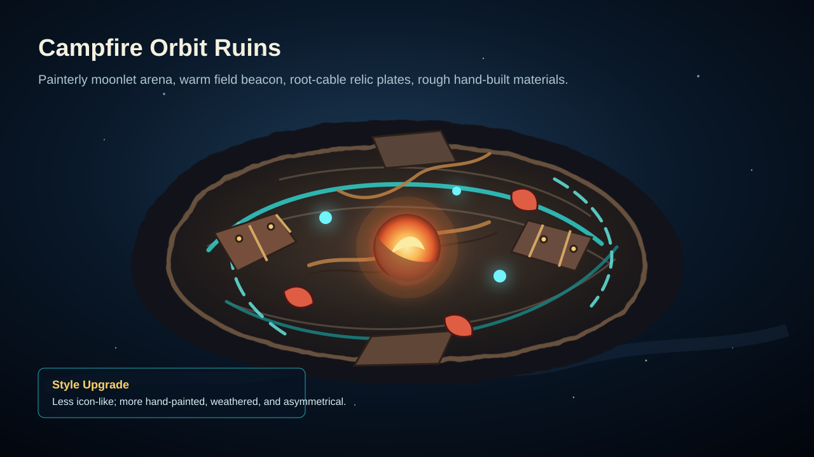
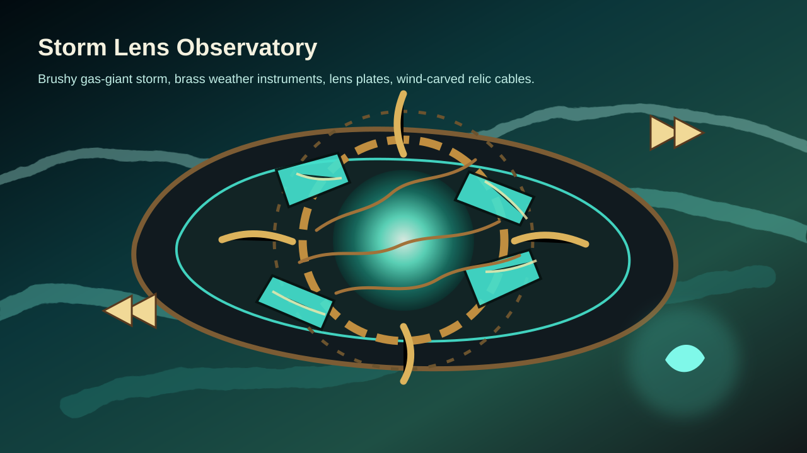
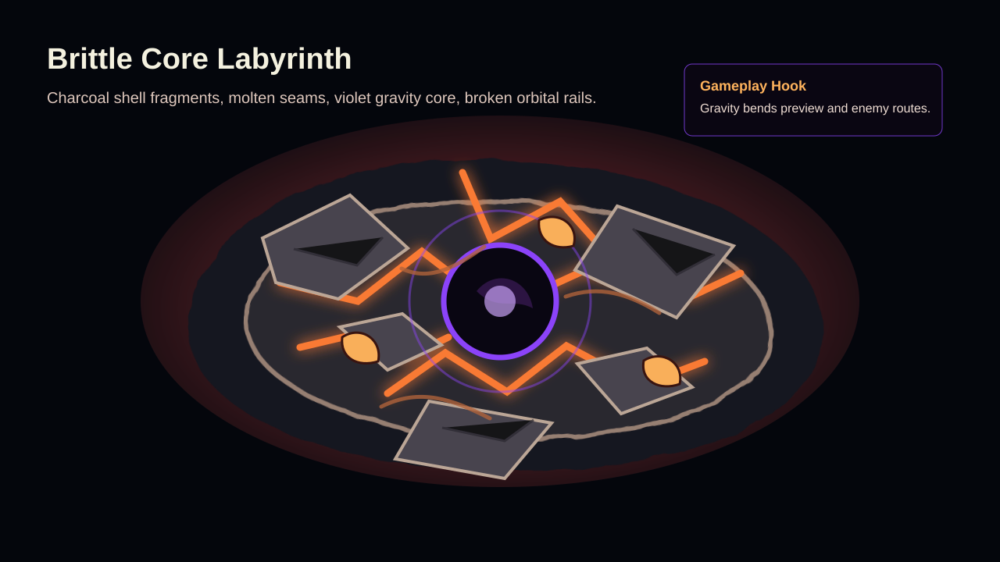
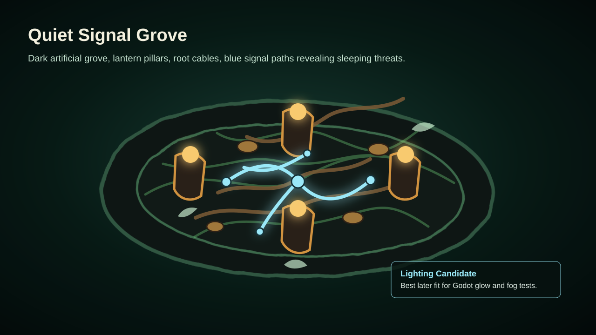
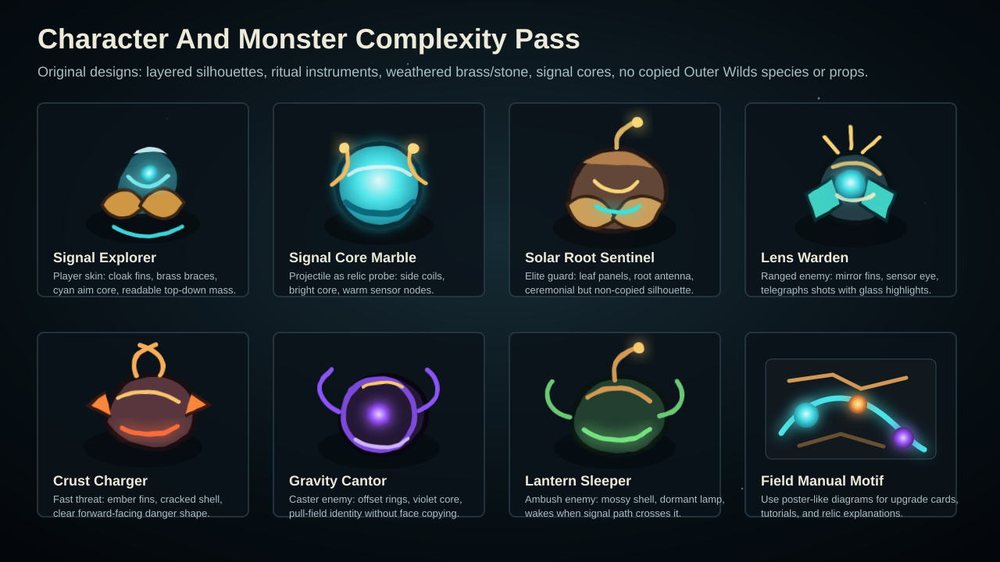

Official Reference Mood
Outer Wilds official page background Study: small explorer scale, warm adventure tone, cosmic backdrop.
Echoes of the Eye official page background Study: darker mystery, lantern mood, large hidden structure feeling.
Mobius dev post reference Study: composition, early art language, broad silhouette and lighting.
Mobius dev post reference Study: planetary contrast and environmental storytelling.
Mobius dev post reference Study: poster-like readability and warm/cool contrast.
Mobius dev post reference Study: simplified shapes that still imply a larger world.
IP guardrail:
这些参考图不进入游戏资源目录，也不作为可复用素材。我们只提炼视觉语言：小宇宙尺度、温暖锚点、动态天体、古代机器、危险自然现象。
Ian Jacobson Concept Reference
Ancient but advanced B 站动态转引的 Ian Jacobson 页面重点在 Nomai 视觉开发。我们只借鉴设计方法：古老材料、先进功能、非威胁性的神秘感。

Original translation 把 Ash Twin Project 的“植物化机器”思路转成我们自己的 solar-root rebound blocks、root-cable floor、signal obelisk。
Reference link:
Bilibili opus: https://www.bilibili.com/opus/759419422973624324. Original artist page: https://www.ianjacobson.com/Outer-Wilds.
Style target:
新版概念板不再按“线条示意图”处理，而是往手绘概念美术靠：粗糙轮廓、颗粒材质、暖冷光对比、根系电缆、黄铜/石材接缝、裂痕和不完全对称的古代科技结构。
Original Cannonball Relic Directions
Banana · style lock v8
Gameplay + HUD Concept — Style Locked Arena Pass
沿用 v7 的怪物识别规则和 banana 克制画风，重新编排玩法场景：月岩竞技场内加入反弹墙、中心 relic bumper、弧形断轨和更明确的青色弹道。怪物保持中明度材质块、轮廓光和功能色，整体更接近可落地的 H5 战斗画面。
Asset Sheet · v1
Direct Asset Generation Test
直接按 v8 风格生成的素材板：玩家、信号弹珠、四类怪物、反弹墙、中心 bumper、弧形断轨、琥珀灯、地砖/根系电缆和 HUD 图标。当前用于验证素材风格和轮廓识别，后续如果确认方向，再拆成透明单图并按游戏尺寸重绘/裁切。
Separated Assets · Player/VFX
Player, Marble, And VFX Sheet
主角、信号弹珠、弹道弧线、命中特效和拾取核心单独拆出，方便先验证移动主体和高频战斗反馈。当前背景不是 alpha 透明，适合作为方向板，后续需要重新生成或抠成透明单图。
Separated Assets · Enemies
Enemy Sheet
四类敌人各两版：太阳根哨兵、镜片守卫、岩壳冲锋者、重力施法者。重点验证中明度身体、彩色边缘光和功能色能否在暗场景中保持识别度。
Enemy Sheet · clean silhouette v2
Extraction-Friendly Enemy Sheet
针对 v1 的树枝/根须边缘太复杂、自动抠图容易出灰边的问题重做。敌人改为更封闭、更大块的轮廓：大叶甲、短粗根脚、球形镜片、楔形岩壳、厚环重力核心。牺牲一点概念细节，换取更稳定的裁切、缩放和碰撞盒。
In-game · skin prototype
Orbit Ruins Skin Test In H5
第一版实际接入：新增 public/assets/skins/orbit-ruins，把 clean silhouette v2 敌人和信号探索者主角放进现有 H5 游戏。验证结果：资源无 404、alpha 有效、敌人能在真实场景中显示；问题是敌人在当前缩放下偏小，环境/障碍仍是继承旧皮肤，下一步要做尺寸调优和场景道具替换。
In-game · props v3
Orbit Ruins Runtime Test With Clean Props
第二轮实装修正：敌人放大，接入反弹墙/道具裁切图，并关闭 orbit-ruins 皮肤下旧障碍矩形底座，避免透明 PNG 后面露出棕色方块。灰石地砖类素材暂不自动抠图，后续应单独生成 edge-to-edge 贴图。
In-game · obstacle fix v4
Procedural Collision-True Obstacles
纠正道具图被拉伸进碰撞盒的问题：orbit-ruins 的障碍物现在改为程序化矩形遗迹块，视觉宽深严格跟随碰撞体，用黄铜边框、青色信号缝和暖色铆钉保留美术方向。AI prop 图后续应作为保持比例的装饰 sprite，或重新生成真正俯视、矩形、edge-to-edge 的障碍贴图。
In-game · textured obstacles v5
Normalized Obstacle Texture Pass
使用专门生成的俯视障碍贴图 sheet，并把裁切图规格化成 4:1、1:5、2:1、1:2、1:1 几种生产尺寸。运行时按碰撞盒长宽选择对应贴图，因此长条、竖条和方块都保持正确方向，避免把概念道具强行变形。
Texture Sheet · obstacles v1
Orthographic Rectangular Obstacle Textures
单独生成的障碍贴图方向板：黄铜边框、月岩内芯、青色信号缝、暖色铆钉。约束重点是正交俯视、直边矩形、无复杂根须、无斜透视，适合作为真正游戏图素的来源，而不是场景概念图。
In-game · floor/wall v6
Orbit Ruins Floor And Wall Texture Pass
补齐默认地表与墙边纹理：从专门生成的 opaque edge-to-edge 纹理板中裁出月岩地面、裂缝地面、根系地面、危险地面和墙边条。第一次裁切格线太重，已改为裁内芯区域，避免地面黑线抢角色。
Texture Sheet · floor/wall v1
Opaque Edge-To-Edge Floor And Wall Textures
针对 runtime 纹理单独生成：普通月岩、青色裂缝、根系缆线、琥珀危险裂缝，以及横向墙边条和竖向墙边条。此类素材不做透明抠图，而是裁成不透明贴图。
In-game · marble v7
Signal-Core Marble Runtime Sprite
从新的 marble/VFX sheet 中抽取 ready signal-core marble，替换 orbit-ruins 的弹珠 sprite。其余轨迹、命中、回收、护盾与重力 VFX 暂作为 runtime 绘制参考，避免直接使用半透明特效图带来灰边。
Separated Assets · marble/VFX v2
Marble States And Combat Feedback Sheet
12 格弹珠与战斗反馈素材：ready、charged、recall ghost、overheat、弹道段、命中爆点、拾取核心、重力脉冲、护盾闪光和碎屑。弹珠可直接接入，VFX 更适合作为运行时代码效果的视觉参考。
In-game · HUD v8
Orbit Ruins HUD Instrument Pass
为 orbit-ruins 增加 skin-specific HUD 样式：暗石半透明面板、黄铜边、青色仪器内线、暖色状态条，并接入生命、护盾、蓄力和右上入口图标。重点是先统一实机界面气质，不影响其他皮肤。
In-game · VFX v9
Runtime Signal Trajectory Pass
Orbit-ruins now uses skin-specific runtime VFX instead of sliced semi-transparent effect sprites: cyan signal beads/segments for aim preview, warm brass/amber bounce markers, and styled burst particles for hits, recalls, pickups, and danger feedback. This keeps the VFX tunable and avoids gray extraction edges.
In-game · interactables v10
Runtime Interactable Prop Pass
Five gameplay interactables now use orbit-ruins prop sprites while keeping their original trigger logic: door switch, pinball duplicator, ice-ball condenser, brazier signal lamp, and alarm post. The sprite pass favors chunky closed silhouettes and compact shapes so it survives extraction and 64px-scale readability.
Separated Assets · interactables v1
Interactable And Pickup Prop Sheet
Focused 3x3 Nano Banana sheet for gameplay props: brazier, pinball node, ice condenser, alarm post, door switch, pickup core, shield seed, repair heart, and upgrade pedestal. The first five are wired into runtime; the remaining four are reserved as future pickup/upgrade prop candidates.
In-game · floor grid v11
Grid-Aligned Floor Texture Pass
Corrected the runtime floor repeat so the visible floor tile scale follows the level grid width and height instead of a fixed 9x7 repeat. One visual floor tile now matches one gameplay cell in runtime levels, keeping obstacle sizes, interactables, and background texture in the same spatial language.
Separated Assets · HUD v2
Normalized Expedition Instrument Icons
16 个 HUD 图标方向：生命、护盾、波次、设置、弹珠、回收、蓄力、闪避、反弹、伤害、重力、危险、根系、镜片、拾取核心和手册。已裁成 64px / 128px 图标包，目前只接入高频 HUD 位置。
Separated Assets · Props/Tiles
Gameplay Props And Tiles
反弹墙、中心 bumper、弧形断轨、琥珀灯、信号节点、月岩地砖、根系电缆砖和熔岩裂缝砖。适合后续拆解成关卡道具与地表贴图。
Separated Assets · HUD
HUD Icon Sheet
16 个抽象图标方向：生命、护盾、蓄力、回收、反弹、重力、火焰、镜片、根系、信标、冲刺、bumper、buff 卡和设置等。没有文字标签，适合继续收敛成 32px/64px 图标系统。
Banana · preferred v7
Gameplay + HUD Concept — Readable Monster Pass
针对 v6 怪物轮廓过黑的问题做的修正版：敌人不再是黑剪影，而是用中明度材质块、彩色轮廓光和发光核心区分职责。太阳根哨兵偏黄铜/绿根，镜片守卫偏青色玻璃，岩壳冲锋者偏熔岩裂缝，重力施法者偏紫色环形结构；整体仍保持 banana 路线的克制和可读性。
Banana · preferred v6
Gameplay + HUD Concept — Simplified Banana Pass
当前更推荐的方向：保留暖灯、青色弹道、月岩遗迹竞技场和四类怪物，但降低机械零件密度和 HUD 装饰复杂度。UI 采用抽象图标与仪器条，不使用可读文字；整体比 gpt-image-2 对照图更适合后续落到 H5 游戏画面。
AI Concept · v1
Gameplay + HUD Concept — Raster v1
俯视 2.5D 遗迹竞技场：信号探索者、弹珠弹射轨迹、太阳根哨兵/镜片守卫/岩浆冲锋者/重力吟诵者/灯笼行者五种怪物，以及环绕边缘的探险手册风格 HUD（生命、波次、蓄力、Buff卡、技能冷却）。画风：手绘独立游戏概念美术，颗粒材质，暖琥珀 + 青色信号光 + 紫色重力色调。
gpt-image-2 · comparison
Gameplay + HUD Concept — gpt-image-2 v1
同一方向的 gpt-image-2 对照样张。优点是场景空间、敌人复杂度、黄铜/石材/根系机器材质和仪器感 HUD 更接近成稿概念图；缺点是左侧卡片生成了可读英文标签，后续若进入 UI 方向应改成抽象图标、无字卡面或单独重绘。
Campfire Orbit Ruins 最适合先做皮肤：环形遗迹、暖色信标、月尘地板、青色弹射纹路。

Storm Lens Observatory 适合风场、加速器和反射镜玩法：气态风暴、黄铜观测仪、镜面弹射。

Brittle Core Labyrinth 适合重力井和裂缝危险地板：破碎小行星壳、熔岩裂隙、紫色引力核心。

Quiet Signal Grove 适合 Godot 后续光照实验：暗色人造月林、弹珠光路、沉睡敌人。

Character And Monster Sheet 角色和怪物复杂度提升：多层轮廓、仪式感道具、信号核心、根系电缆、黄铜/石材材质。
Raster · Arena v1
Arena Concept — Flat Glow Style
扁平发光轮廓风格竞技场：深空底色、琥珀火炬点光、青色弹珠轨迹、五种怪物各自发光色（根系橙、岩浆橙红、重力紫、灯笼暗棕）、HUD 黄铜边框。
Raster · UI v1
HUD Component Sheet
探险仪器面板风格 UI：生命条、波次显示、蓄力圆弧、弹珠状态四格、冲刺条、三档稀有度 Buff 卡、冷却图标集群。黄铜铆钉框架，暗色半透明底板。
Raster · Sprites v2
In-Game Character Sprites
等距俯视角实装素材：信号探索者、弹珠、根系哨兵、镜翅守卫、岩浆冲锋者、重力吟诵者、灯笼行者、爆爆虫。各站独立地砖，保持游戏内比例。
方向B · Hozy风格
Hozy 风格竞技场 — 欧式浮岛
软渲染 3D、欧式砖墙露台、赤陶屋顶、拱门废墟、云层底座。怪物可爱立体，HUD 融入建筑元素。与深空遗迹方向的对比备选。